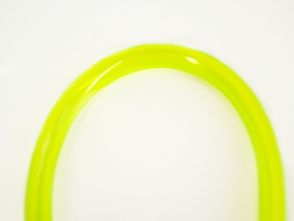
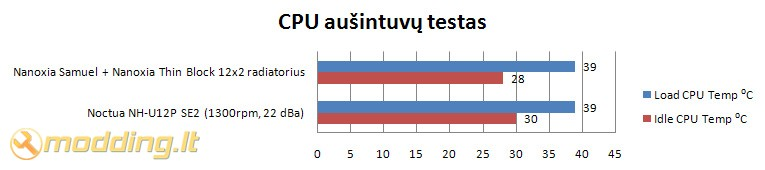

Nanoxia aušinimo vandeniu komponentų apžvalga
 Nanoxia kompanija mums jau šiek tiek pažįstama, nes mano kolega ExT apžvelgė kelis jų gaminius, tokius kaip DX serijos aušintuvai bei Heat Buster ir Nano TF-1000 termopastos, bei mano apžvelgtas Hyperzero Water Cooling Fluid. Šie gaminiai mūsų lūkesčių nenuvylė ir paliko gerą ispūdį. Praėjusių metų lapkričio mėnesį kompanija Nanoxia pagamino savo pirmuosius CPU aušinimui vandeniu skirtus blokus. Jų puslapyje taipogi atsirado radiatoriai, specialios jungtys, vandens pompos ir kiti PC aušinimo vandeniu skirti produktai. Modding.lt buvo suteikta proga išmėginti iškarto net kelis Nanoxia gaminius: Nanoxia Samuel aušinimo bloką, Thin Block 12x2 radiatorių, ICEGLOW Balancer 150 rezervuarą, Black Connect 130 SHT jungtis bei NANOFLEX Tube 130 vandens žarneles.
Nanoxia kompanija mums jau šiek tiek pažįstama, nes mano kolega ExT apžvelgė kelis jų gaminius, tokius kaip DX serijos aušintuvai bei Heat Buster ir Nano TF-1000 termopastos, bei mano apžvelgtas Hyperzero Water Cooling Fluid. Šie gaminiai mūsų lūkesčių nenuvylė ir paliko gerą ispūdį. Praėjusių metų lapkričio mėnesį kompanija Nanoxia pagamino savo pirmuosius CPU aušinimui vandeniu skirtus blokus. Jų puslapyje taipogi atsirado radiatoriai, specialios jungtys, vandens pompos ir kiti PC aušinimo vandeniu skirti produktai. Modding.lt buvo suteikta proga išmėginti iškarto net kelis Nanoxia gaminius: Nanoxia Samuel aušinimo bloką, Thin Block 12x2 radiatorių, ICEGLOW Balancer 150 rezervuarą, Black Connect 130 SHT jungtis bei NANOFLEX Tube 130 vandens žarneles.
Žvilgsnis iš arčiau
Nanoxia aušinimui vandeniu elementai pas mus atkeliavo kukliai supakuoti, kadangi modding.lt vieni pirmųjų gavo galimybę juos išmėginti.
Nanoxia Black Connect 130 SHT jungtys
Nanoxia Black Connect 130 SHT jungtys yra 13/10mm G1/4 standarto. Jos pritaikytos naudoti su Nanoxia NANOFLEX Tube 130 Series - vandens žarnelėmis, kurių vidinis diametras yra 10mm (3/8 inch). Su šiomis jungtimis galima naudoti PVC, PU, PA, PE bei silikonines žarneles.
Black Connect 130 SHT jungtys juodos, nikeliuotos. Apatinėje dalyje turi guminę tarpinę, o viršutinėje - prispaudžiantįjį žiedą. Vandens žarnelė užmaunama ant jungties bei prisukamas užspaudžiantysis žiedas. Mechanizmas paprastas ir patikimas. Jungties korpusas pagamintas su specialiai užveržimui skirtais kraštais - galima naudoti užveržimo raktą.
Nanoxia Samuel - CPU aušinimo blokas
Nanoxia Samuel blokas skirtas socket LGA 775, AM2/754/939/478. Jo universalumą lemia paprastas sprendimas: blokas tvirtinamas naudojant plieninę plokštę, kurioje išgręžtos skylės pagal skirtingų socket tvirtinimo išmatavimus.
CPU aušinimo blokas Nanoxia Samuel pagamintas naudojant varinį pagrindą, permatomą organinio stiklo dangtelį ir metalinį tvirtinimo rėmelį. kartu su aušinimo bloku pridedami montavimo varžtai su visomis reikalingomis detalėmis. Variniame bloke padaryti iškilimai, kurie didina šilumos išspinduliavimo plotą ir taip pagerina aušinimą.
Charakteristikos:
- Suderinamumas: socket LGA 775, AM2/754/939/478
- Matmenys: 60mm x 107mm x 14
- Medžiagos: varis, plienas, organinis stiklas
- Juntis: G1/4
- Masė: 170 g
Šiam CPU aušinimo blokui naudojamos 13/10mm G1/4 standarto jungtys. Jos įsukamos į organinio stiklo dangtelį. Jokios papildomos izoliacijos ar hermetiko surinkimo metu nereikia - junties guminė tarpinė užsandarina pakankamai gerai. Įsukant jungtis nereikia persistengti ir perveržti, nes tuomet guminė tarpinė praras savo izoliavimo savybes.
Nanoxia Thin Block 12x2 radiatorius
Kompanija Nanoxia siūlo Thin Block ir Big Block serijos radiatorius. Jie skiriasi savo storiu. Taipogi siūlomi skirtingi variantai: Big Block serijos 1x80mm, 1x92mm, 2x120mm, 3x120mm ir 4x120mm. Thin Block serijoje yra 1x120mm, 2x120mm ir 3x120mm variantai - kiekvienas ras sau tinkamiausią.
Mano apžvelgiamas radiatorius yra Thin Block 2x120mm. Jo charakteristikos:
- Matmenys: 273 x 120 x 30 mm
- Jungtys: 10mm G1/4
- Ventiliatorių kiekis: maksimaliai galima sumontuoti 4 ventiliatorius, po du kiekvienoje pusėje
- Svoris: 680 g
Nanoxia Thin Block radiatorius yra varinis, nudažytas juoda spalva. Iš šonų pritvirtinti du rėmai, prie kurių tvirtinami ventiliatoriai. Kadangi rėmai iš abiejų pusių - ventiliatorius taipogi galima montuoti iš abiejų pusių. Pozicijos G1/4 jungčių pajungimui išdėstytos radiatoriaus gale, simetriškai, per vidurį.
Nanoxia ICEGLOW Balancer 150 rezervuaras
Naudojant aušinimo vandeniu sistemas, dažniausiai neapsieinama be rezervuarų. Išimtis tik tie atvėjai, kuomet sistemos komplektuojamos su integruotus rezervuarus turinčiomis vandens pompomis. Vandens rezervuarai pagerina vandens susimaišyma, užtikrina pakankamą vandens kiekį sistemoje bei palengvina sistemos užpildymą vandeniu ar kitu skysčiu.
Komplekte randame:
- rezervuarą
- du rezervuaro laikiklius
- tvirtinimo varžtus
Rezervuaro charakteristikos:
- Matmenys: 150 x 50 mm
- Medžiagos: plastikas
- Spalva: permatomas
- Jungtys: trys G1/4
Nanoxia ICEGLOW Balancer 150 rezervuaras pagamintas iš plastiko ir organinio stiklo. Abiejuose rezervuaro galuose yra dangteliai, kurie atsisuka. Rezervuaro viršuje yra dangtelis su trimis angomis skirtomis jungtims. Viena iš angų skirta rezervuaro užpildymui ir joje jau įsuktas "kamštis".
Sukdamas į rezervuarą jungtis susidūriau su keblumu - angos jungtims padarytos per arti viena kitai ir storos Black Connect 130 SHT jungtys sunkiai užsisuka, kadangi trugdo viena kitai. Problemą išspręstų keli milimetrai, nes jungtis užsukti įmanoma ir dabar, tiesiog tai reikalauja didesnių pastangų. Naudojant siauresnes jungtis problemų kilti neturėtų.
NANOFLEX Tube 130 vandens žarnelės
Kompanija Nanoxia siūlo nemažą vandens žarnelių asortimentą: 10/13mm arba 13/16mm, skaidrios, UV reaktyvios mėlynos, UV reaktyvios raudonos, UV reaktyvios žalios, UV reaktyvios juodos, UV reaktyvios baltos, UV reaktyvios sidabrinės bei UV reaktyvios skaidrios.
Mano apžvalgoje naudojamos Nanoxia NANOFLEX Tube 130 UV reaktyvios, žalios vandens žarnelės, kurių diametras 10/13: 10mm - vidinis, 13mm - išorinis diametras. Žarnelės lanksčios, ganėtinai minkšos ir kokybiškos, o svarbiausia - turi gerą neužlūžimo kampą, kas itin svarbu montuojant ir išvedžiojant žarneles.
Montavimas
Į Fractal Design Define R2 korpusą montuojama aušinimo vandeniu sistema naudojant šiuos komponentus: Nanoxia Samuel aušinimo bloką, Thin Block 12x2 radiatorių, ICEGLOW Balancer 150 rezervuarą, Black Connect 130 SHT jungtis bei NANOFLEX Tube 130 vandens žarneles. Sistema užpildoma distiliuotu vandeniu ir Hyperzero Water Cooling Fluid sistemos užpildymo skysčiu, kuris yra UV reaktyvus.
Visų pirma montuojamas Nanoxia Samuel procesoriaus aušinimo blokas: nuo motininės plokštės nuimamas back plate, sudedami varžtai, kurie iš kitos pusės užsukami. Vėliau ant CPU tepama termopasta, nuo aušinimo bloko nuimama apsauginė plėvelė ir montuojamas CPU aušinimo blokas. Ant varžtų dedamos spyruoklės, kurios paeiliui po truputį suspaudžiamos užveržiant.
Ant radiatoriaus prisukame ventiliatorius ir montuojame ant korpuso šono. Manau jums kils klausimų, kodėl nemontavau radiatoriaus korpuso viduje - montavau, tik teko demontuoti: Fractal Define R2 korpuse buvo per mažai vietos tarp Asus M2N-E nForce570 Ultra motininės plokštės RAM laikiklių ir radiatoriaus, todėl nepavyko radiatoriaus sumontuoti per korpuso viršaus vidurį. Paslinkus radiatorių į šoną užsidengdavo vieno šono tvirtinimo skylės. Plačiau apie Fractal Design Define R2 trūkumus montuojant watercooling sistemą parašysiu korpuso apžvalgos papildyme artimiausiu metu.
Radiatorių pritvirtinau galinėje korpuso sienelėje, iš išorės. Vienas ventiliatorius yra tarp korpuso ir radiatoriaus - jis iš korpuso traukia orą, bei nupučia karštą orą nuo radiatoriaus. Kitas ventiliatorius sumontuotas ant radiatoriaus, jis nutraukia karštą orą.
Sumontavę radiatorių ieškome vietos pompai ir rezervuarui. Rezervuaras puikiai tilpo korpuso galinėje sienelėje, šalia GPU. Rezervuaro laikiklius prisukau prie korpuso sienelėje buvusių ventiliacijos angų. Pompą pastačiau maždaug per korpuso vidurį - tai optimalus sprendimas, kadangi tuomet pompai nereiks aukštai kelti vandens.
Vienas sudėtingesnių aušinimo vandeniu sistemos surinkimo etapų yra sistemos užpildymas. Jis gerokai palengvėtų turint taip vadinamą
filling port'ą, kuris montuojamas korpuso viršuje. kadangi jo neturiu, teko pasinaudoti rezervuaru: korpusą paguldžiau ant šono, rezervuarą iškėliau virš kitų komponentų ir pripyliau distiliuoto vandens bei Hyperzero Water Cooling Fluid'o. Pajungiau pompą prie PSU ir po kelių įjungdamo/išjungdamo kartų iš sistemos į rezervuarą buvo išstumtas oras. Rezervuaras pripiltas maksimaliai ir uždarytas. Aušinimo sistema buvo įjungta ir palikta sandarumo testui - taip vadinamam leak test'ui. Po 12 val. testavimo apžiūrėjęs vandens pratekėjimo lašų neradau, todėl galima drąsiai jungti PC.
Vaizdas tamsoje
Rezultatai
Testavimo sistema:
- CPU Cooler - Nanoxia Samuel aušinimo blokas, Nanoxia Thin Block 12x2 radiatorius, Eheim PCPS 12V vandens pompa
- Case - Fractal Design Define R2
- Mainboard - Asus M2N-E nForce570 Ultra
- CPU - AMD Athlon 64 X2 Dual-Core 5000+ AM2 (65W)
- RAM - Corsair DDR2 KIT 2X1G 800MHZ TWIN2X2048-6400 G
- HDD - SEA BARRACUDA 160GB 7200rpm
- GPU - inno3D GF8800GT 512MB GDDR3 RAMDAC 400MHZ Core 600MHz Memory 1800MHz
- PSU - Nexus NX-5000 R3
- Case Fans - 2 x Fractal Design Silent Series 120mm (1000rpm, 65.0 m³/h)
Procesoriaus (CPU) temperatūra testuojama Idle ir Load rėžimais. Load rėžimui naudojama Orthos programa. Temperatūros rodmenys stebėti SpeedFan 4.39 bei Core Temp 0.99.5 programomis. Testuojant korpusą, buvo atidengtos dvi viršutinės ventiliatorių montavimo angos, tačiau ventiliatoriai nebuvo montuojami. Šoninė ventiliatoriaus anga buvo uždaryta.

Nanoxia aušinimo vandeniu elementai, Nanoxia Samuel aušinimo blokas ir Thin Block 12x2 radiatorius, testuose parodė gerus aušinimo rezultatus. Idle rėžime Nanoxia watercooling sistema aplenkė Noctua NH-U12P SE2 2 ⁰C, o Load rėžime temepratūros buvo vienodos. Būtina paminėti, jog Noctua aušintuvas testuose aušinamas dviem ventiliatoriais, kurie sukasi 1300 rpm, taipogi korpuse veikė papildomas, orą ištraukiantis, Fractal Design Silent Series 120mm (1000rpm, 65.0 m³/h). Testuojant Nanoxia elementus, aušinimo sistemoje buvo tik du ventiliaotiai Fractal Design Silent Series 120mm (1000rpm, 65.0 m³/h).
Norėdamas sužino kaip kis CPU temperatūra tęsiau procesoriaus kaitinimą Orthos programa. Rezultatai tokie: po 5min - 41 ⁰C, po 10 min vienas CPU branduolis pasiekė 47 ⁰C. Testo metu procesoriai apkraunami 100%. Tokie testo rezultatai mano manymu yra išties puikūs, turint aumenyje, jog AMD Stock aušintuvas su testuose naudojamu Athlon 64 X2 Dual-Core 5000+ AM2 (65W) procesoriumi jau po 2 min Orthos testų užkaista iki 54 ⁰C.
Išvados
Pliusai:
- geri aušinimo rezultatai
- kokybiški komponentai
- stilingai atrodanti sistema
- patogios jungtys, leidžiančios lengvai užspausti žarneles
- lengvas Samuel aušinimo bloko montavimas
- permatomas Samuel bloko dangtelis
- galimybė ant radiatoriaus montuoti 4 ventiliatorius
- abiejuose rezervuaro galuose atsisukantys dangteliai, yra užpildymui skirta anga
- rezervuaras iš rėmelio lengvai išimamas ir įdedamas
- žarnelės lanksčios, minkšos
Minusai:
- rezervuaro angos jungtims padarytos per arti viena kitai ir storos Black Connect 130 SHT jungtys sunkiai užsisuka, nes liečiasi viena su kita
 Nanoxia aušinimo vandeniu komponentai yra kokybiški bei efektyvūs.
Nanoxia Samuel aušinimo blokas kartu su Thin Block 12x2 radiatoriumi aušinimo testuose parodė gerus rezultatus. Ypač stabilus aušinimas esant pilnai ir ilgalaikei procesoriaus apkrovai - didžiausias šio watercooling rinkinio pliusas. Gerą estetinį sistemos vaizdą garantuoja permatomo akrilo ICEGLOW Balancer 150 rezervuaras, kuris užlipdytas UV reaktyviu skysčiu, atrodo šauniai. Nanoxia siūlomos NANOFLEX Tube 130 vandens žarnelės yra lanksčios ir turi gerą "neužlūžimo" kampą - tai išties svarbus aspektas komplektuojant aušinimo vandeniu sistemą. Black Connect 130 SHT jungtys leidžia greitai ir patikimai sujungti vandens žarneles, o juodas jungčių paviršiaus padengimas atrodo solidžiai. Vienintėlis nesklandumas yra rezervuaro ir Black Connect 130 SHT jungčių naudojimas - angos rezervuare kiek per arti viena kitos, todėl jungtys liečiasi viena su kita taip apsunkindamos žarnelių užspaudimo procesą. Šią problemą galima išspręsti panaudojant plonesnes jungtis. Susumavęs visus pliusus ir minusus, Nanoxia aušinimo vandeniu komponentams suteikiu "modding.lt renkasi" įvertinimą.
Nanoxia aušinimo vandeniu komponentai yra kokybiški bei efektyvūs.
Nanoxia Samuel aušinimo blokas kartu su Thin Block 12x2 radiatoriumi aušinimo testuose parodė gerus rezultatus. Ypač stabilus aušinimas esant pilnai ir ilgalaikei procesoriaus apkrovai - didžiausias šio watercooling rinkinio pliusas. Gerą estetinį sistemos vaizdą garantuoja permatomo akrilo ICEGLOW Balancer 150 rezervuaras, kuris užlipdytas UV reaktyviu skysčiu, atrodo šauniai. Nanoxia siūlomos NANOFLEX Tube 130 vandens žarnelės yra lanksčios ir turi gerą "neužlūžimo" kampą - tai išties svarbus aspektas komplektuojant aušinimo vandeniu sistemą. Black Connect 130 SHT jungtys leidžia greitai ir patikimai sujungti vandens žarneles, o juodas jungčių paviršiaus padengimas atrodo solidžiai. Vienintėlis nesklandumas yra rezervuaro ir Black Connect 130 SHT jungčių naudojimas - angos rezervuare kiek per arti viena kitos, todėl jungtys liečiasi viena su kita taip apsunkindamos žarnelių užspaudimo procesą. Šią problemą galima išspręsti panaudojant plonesnes jungtis. Susumavęs visus pliusus ir minusus, Nanoxia aušinimo vandeniu komponentams suteikiu "modding.lt renkasi" įvertinimą.
Pateikiu komponentų kainas iš Nanoxia e-parduotuvės: Nanoxia Samuel kaina € 44,90 (155Lt); Thin Block 12x2 kaina € 29,90 (103Lt); ICEGLOW Balancer 150 kaina € 24,95 (86Lt); Black Connect 130 SHT 1 vnt. kaina € 3,25 (12Lt); NANOFLEX Tube 130 1m. kaina € 3,99 (14Lt).
Nanoxia puslapyje nurodomas produkcijos platintojas Lietuvoje „ASBIS“.
Modding.lt komanda dėkoja Gökhan Avci iš www.nanoxia-europe.com už apžvalgai suteiktus produktus.
Jei norėsite pakomentuoti mano straipsnį arba pareikšti savo nuomonę, apsilankykite Modding.lt forume.


{kind=link}
{kind=link}
{kind=link}
{kind=link}
{kind=link}
{kind=link}
{kind=link}
{kind=link}
{kind=link}
{kind=link}
{kind=link}
{kind=link}
{kind=link}
{kind=link}
{kind=link}
{kind=link}
{kind=link}
{kind=link}
{kind=link}
{kind=link}
{kind=link}
{kind=link}
{kind=link}
{kind=link}
{kind=link}
{kind=link}
{kind=link}
{kind=link}
{kind=link}
{kind=link}
{kind=link}
{kind=link}
{kind=link}
{kind=link}
{kind=link}
{kind=link}
{kind=link}
{kind=link}
{kind=link}
{kind=link}
{kind=link}